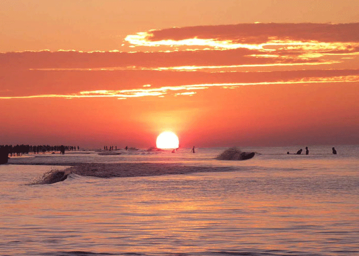

kuakata

About kuakata
Kuakata is a town known for its panoramic sea beach.
[1][2] It is in southeastern Bangladesh and is the number two tourist destination in the country.
Kuakata beach is a sandy expanse 18 kilometres (11 mi) long and 3 kilometres (1.9 mi) wide.[3] From the beach one can have an unobstructed view of both sunrise and sunset over the Bay of Bengal.Kuakata (Bengali: কুয়াকাটা) is a town known for its panoramic sea beach.
[1][2] It is in southeastern Bangladesh and is the number two tourist destination in the country.
Beach
Kuakata offers a full view of the sunrise and sunset from the same white sandy beach in the water of the Bay of Bengal. Locally known as Shagor Kannya (Daughter of Ocean), the long strip of dark, marbled sand stretches for about 18 kilometres (11 mi). The long, wide beach at Kuakata has a typical natural setting. This sandy beach has gentle slopes into the Bay of Bengal. Kuakata is also a sanctuary for migratory winter birds.
On the eastern end of the beach is Gongamati Reserved Forest, an evergreen mangrove forest and snippet of the original Kuakata. (When the Rakhines settled in the area in 1784, Kuakata was part of the larger Sundarbans forest. However, the Sundarbans is one-hour away by speed boat.) As a mangrove forest, Gongamati, like the Sundarbans, offers some protection against tidal surges. However, it too is being threatened by logging and deforestation. The best way to reach the forest is by foot or bike along the beach, where flag-flying fishing boats can be seen trawling the coast. Visiting Gangamati in the late afternoon is a perfect time to watch the sun cast shadows on the exposed mangrove roots.
On 13 September 2007 the government had announced a red alert in Kuakata as caution for a possible tsunami.

Sunset

Culture
Kuakata is a place of pilgrimage for Hindu and Buddhist communities. Innumerable devotees arrive here at the festivals of 'Rush Purnima' and 'Maghi Purnima'. On these occasions the pilgrims take holy baths at the bay and participate in the traditional fairs.[1] One may visit a 100-year-old Buddhist temple where the statue of Goutama Buddha and two 200-year-old wells are located